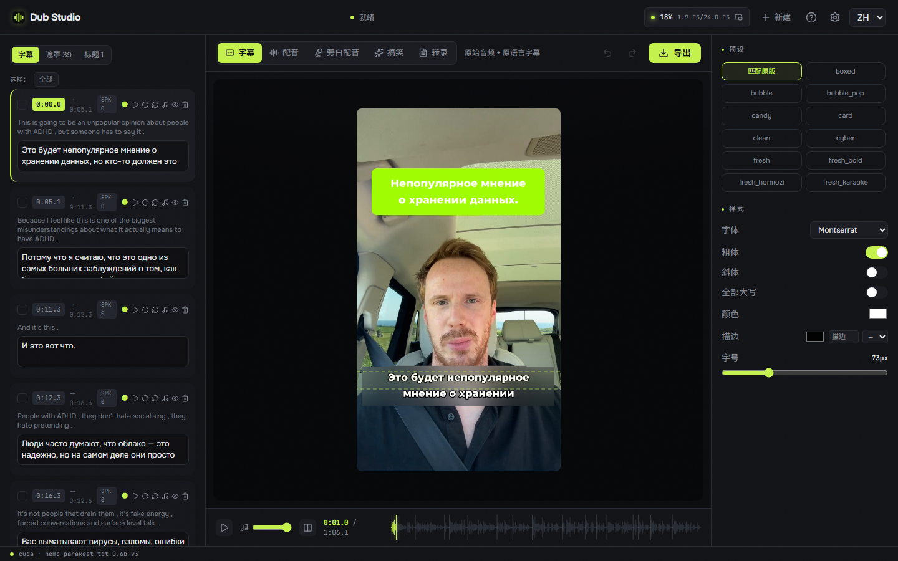
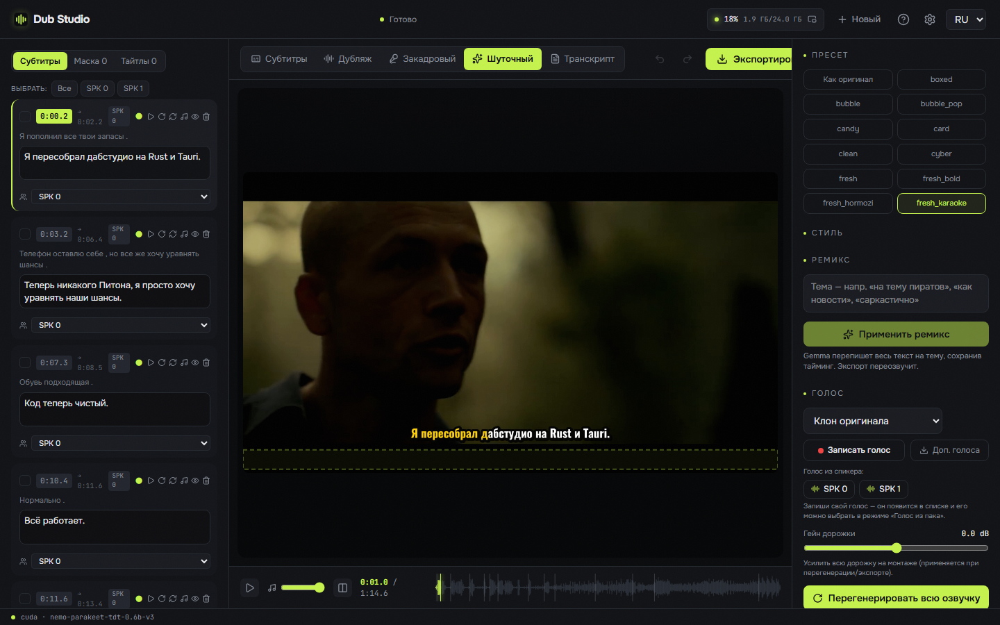
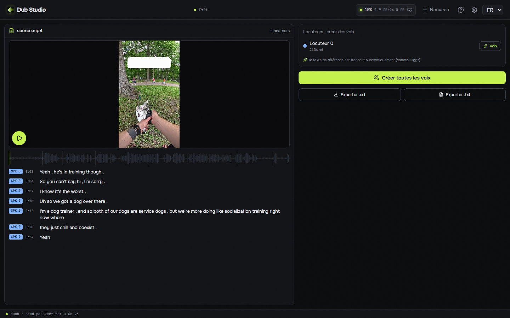
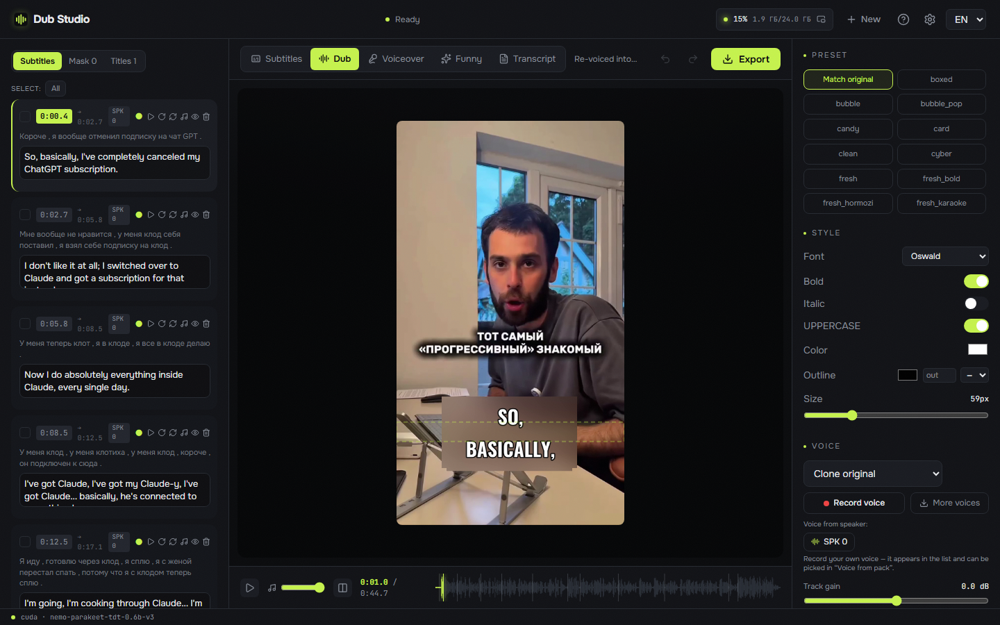

Re-voice any clip into another language — with the speaker's own voice cloned, captions translated, and on-screen text localized right on the frame. 100% on your machine. No cloud, no upload, no subscription.

Every clip below was processed end-to-end on a local GPU. Different videos, different modes, different languages — nothing left the machine.
Load a clip once and send it into any mode — right inside the editor.
Full re-voice into the target language with the original timbre cloned — auto-cast per speaker or pick a voice.
Translated voice over the ducked original — the source is still audible underneath, balance adjustable.
Burn original-language captions and keep the original audio — no dubbing, no translation.
Give a theme — the model rewrites the whole script, then re-dubs it.
Clean diarized transcript with karaoke play-along, one-click voices, and .srt / .txt export.
The full editor — dub, voice-over, subtitles, funny remix and transcript — localized into 6 languages.





A smart auto-pass builds the first draft; then you fine-tune everything with a live preview.
Drop a video and pick a target language — separation, ASR, diarization, translation and OCR run in one pass.
Choose a mode: dub, voice-over, subtitles, funny remix or transcript.
Edit anything — transcript, voices, caption style, blur boxes, titles — with an instant preview.
Export the finished video. Everything runs locally on your GPU.
 Dub Studio
Dub Studio